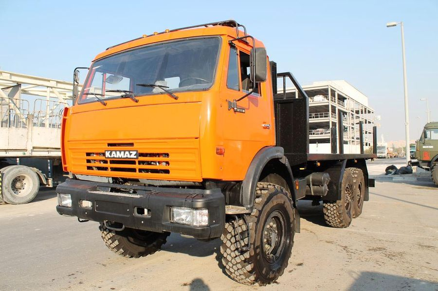
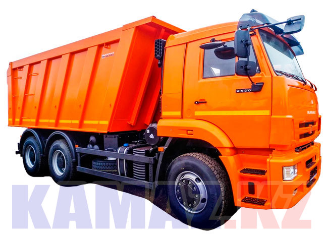

В 1960-х годах экономика СССР нуждалась в увеличении парка грузовых автомобилей, особенно современного типа с грузоподъёмностью от 8 до 20 тонн с более экономичным дизельным двигателем. Существовавшие автомобильные заводы эту потребность восполнить не могли. В августе 1969 года ЦК КПСС и Совет министров СССР приняли ряд документов, в том числе Постановление № 674 от 14 августа 1969 «О строительстве комплекса автомобильных заводов в Набережных Челнах Татарской АССР». Заводы должны были специализироваться на производстве только большегрузных автомобилей. Строительству заводов в данном месте способствовало месторасположение города — в центре страны, наличие судоходных рек Камы и Волги, близость железной дороги — позволяли обеспечить будущий автогигант строительными материалами, сырьём, оборудованием и комплектующими. По первоначальному проекту, он должен был производить 150 тыс. большегрузных автомобилей и 250 тыс. двигателей в год.
Уже 13 декабря 1969 года экскаваторщик Михаил Носков вынул первый ковш земли на промышленной площадке будущего автогиганта на Каме. Строительно-монтажные работы начаты с февраля 1970 года[3], и уже к концу года были уложены первые кубометры бетона в фундамент первенца КамАЗа — Ремонтно-инструментального завода, а также корпуса серого и ковкого чугуна Литейного завода. Здание генеральной дирекции, 1981 год Летосчисление большегрузных автомобилей исчисляется с 16 февраля 1976 года — в этот день с конвейера сошёл первый собранный большегруз. Первая очередь предприятия была сдана в эксплуатацию 29 декабря 1976 года
 